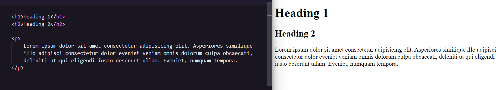
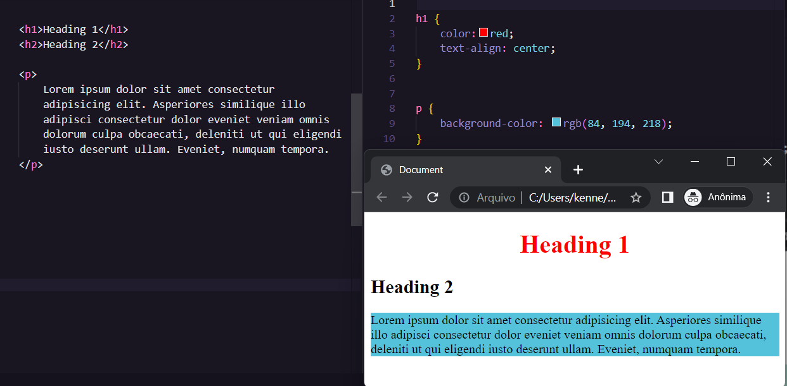
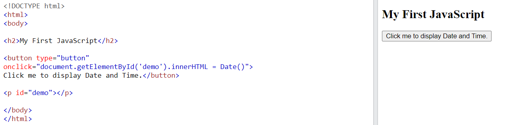

Starting :)
- Introduction
- Client-side and Server-side
- A little about HTML
- A little about CSS
- A little about JavaScript
Introduction
The idea of this thirty-day project is basically to develop a website while we study the technologies needed to build it.Well, to start the project we first had to understand what these technologies are, what they do, what they feed on and where they live.
Client-side and Server-side
Using W3schools and MDN as a reference, we understand that the web world is divided into two major branches called client-side and server-side.
- The client-side is composed of technologies that run directly in the browser, basically what the user sees and interacts with.
- The server-side (server side) in turn are technologies that run on the server, when entering a page, requests are made to the server that processes the necessary data and sends them to the client that displays them correctly.
In these thirty days we will focus on the client-side and on HTML, CSS and as a no-compromise bonus a bit of JavaScript programming language.
A little about HTML
HTML is a markup language used to give meaning and structure to content, with which the browser and search engines (Google) can interpret what a paragraph, an image or a title is.
A little about CSS
CSS is used to style these markers, coloring them by adding animations and is also responsible for the positioning of the elements.
A little about JavaScript
Whenever we have pages that do more than show static content, it is almost certain that the Javascript programming language is there, it is widely used to give interactivity to websites.
